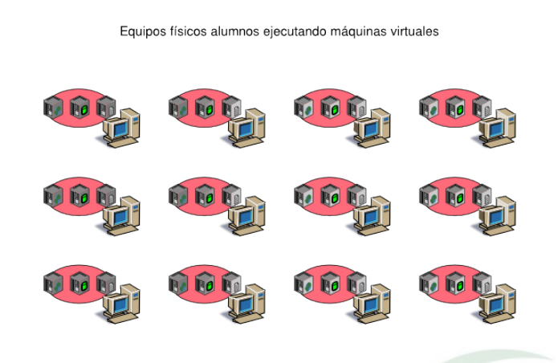
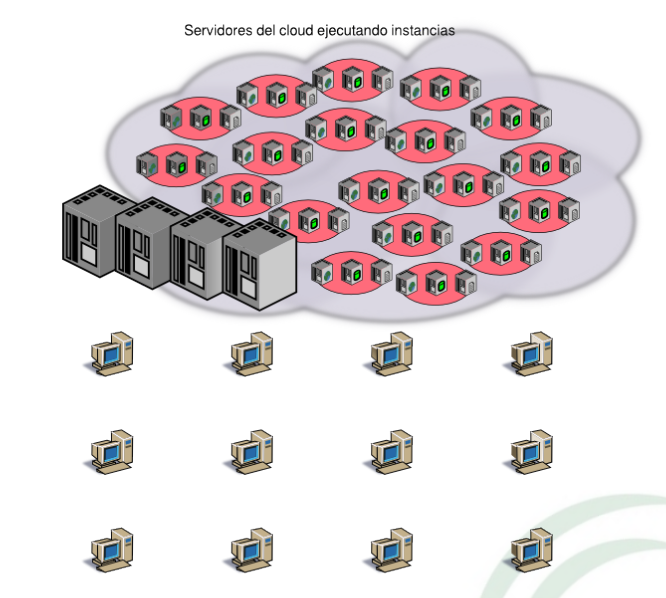

Evolución de las herramientas didácticas
A la par de la evolución tecnológica se ha producido una evolución en las herramientas didácticas para el aprendizaje de la informática, que podríamos de forma muy general clasificar en tres fases diferentes:
- Primera fase: Utilización de equipos físicos
- Segunda fase: Utilización de máquinas virtuales
- Tercera fase: Utilización de IaaS
Estas fases no son excluyentes: una fase siempre puede incluir las anteriores.
Primera fase: Utilización de equipos físicos

Utilización de equipos fíısicos:
- Una máquina por alumno
- Algunos servidores compartidos
- El alumno gestiona su propio equipo
- El alumno no gestiona los servidores
- Ventajas:
- Fácil despliegue inicial y puesta en marcha
- Desventajas:
- Entorno poco versátil
- Prácticas muy limitadas por número de equipos y tipo de configuraciones
- Hardware poco variado
- Prácticas en general muy "académicas"
- Prácticas reales complicadas de preparar
- Tiempos muertos entre prácticas
- Posibles conflictos entre asignaturas
Segunda fase: Utilización de máquinas virtuales

Utilización de máquinas virtuales:
- Un equipo por alumno
- Varias máquinas virtuales por máquina física
- El alumno gestiona su equipo
- El alumno gestiona sus máuquinas virtuales
- Ventajas:
- Cada alumno dispone de un entorno "completo" e independiente
- Prácticas menos rígidas
- Más sencillo simultanear prácticas
- Se aprende virtualización de forma transversal
- Desventajas:
- Entorno más complejo
- Requiere equipos actualizados para los alumnos
- Los alumnos tienen que administrar el gestor de máquinas virtuales
Segunda fase: Utilización de IaaS

Utilización de IaaS:
- Un equipo convencional por alumno
- IaaS privado de la organización
- Los alumnos gestionan sus instancias en el cloud
- Los alumnos no gestionan el software de IaaS
- Ventajas:
- Creación/uso/eliminación de instancias rápido y sencillo
- Mayor variedad de prácticas
- Fácil utilización de entornos preconfigurados
- Utilización de entornos más complejos
- Equipos básicos para los alumnos
- Aprendizaje transversal de Cloud Computing
- Desventajas:
- Sistema muy centralizado
- Imprescindible administración del Cloud
- La inversión inicial puede ser importante
Simulación de entornos reales
Un entorno real es difícil de simular con MVs en un PC por sus propias limitaciones, pero en un cloud es asumible:
- Se puede simular una red con un número importante de equipos
- Se puede utilizar la diversidad que se quiera de SOs
- Este entorno real pueden utilizarlo conjuntamente todos los alumnos
- Puede estar disponible durante todo el curso sin interferir con otras asignaturas
- Con el tiempo y el uso irán apareciendo conflictos y problemas reales